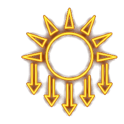
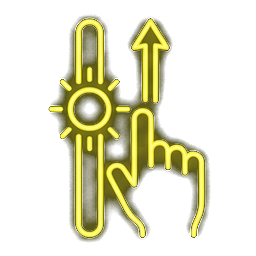
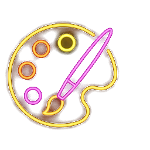

解開手機演算法的照妖鏡魔咒，還原長輩最溫馨自然的容顏
生活黑客 HACKER
手機畫質明明很好，直出效果卻讓人崩潰的兩大元兇：

用對光，臉部瑕疵瞬間減半：
不要再用一般的相機模式拍長輩了：
左右滑動下方滑桿，體驗廣角變形與人像黃金焦段的視覺差異：
運用光學補光原理，讓陰影在充足曝光下自然淡化：


「人像模式」能拯救人像拍照顯老，其背後最關鍵的機制是？
好的姿勢與表情，能讓畫面立刻充滿生命力與幸福感：
將所有關鍵技巧與設定彙整為全景圖：
用正確的相機設定，記錄最自然溫馨的家庭回憶
生活黑客 HACKER · 感謝您的參與